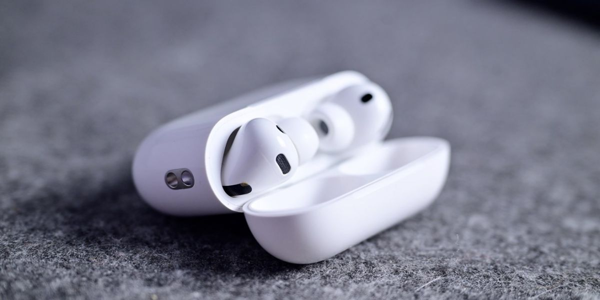
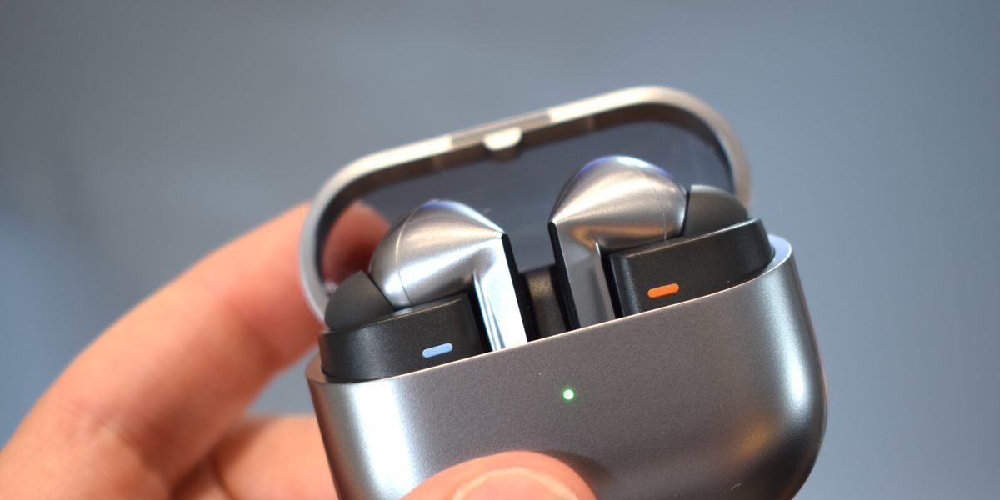

반도체를 만드는 기업에서
반도체가 탄생하는 구조로
반도체가 탄생하는 구조로
설계와 제조를 분리해, 공장 없는 설계기업도 성장할 수 있는 산업 생태계를 만들다
모리스 창의 TSMC 혁신
“반도체를 잘 만드는 기업이 아니라, 누구나 반도체를 설계할 수 있는 산업구조를 만들었다.”
이 글은 TSMC의 성공을 비즈니스혁신연구소의 혁신 공식과 4가지 패턴으로 읽습니다.
1987년 56세에 TSMC를 설립한 모리스 창은 반도체 제조기술뿐 아니라 반도체 산업의 경쟁 방식 자체를 바꾼 인물입니다.
모리스 창의 혁신은 연구소의 4가지 패턴 가운데 ‘문제의 재정의’가 핵심이며, 여기에 ‘해법의 전환’, ‘새 영토의 확장’, ‘집토끼 전략’이 결합된 대표적 사례입니다.
기존 반도체 기업들이 ‘어떻게 더 좋은 반도체를 만들 것인가’를 두고 경쟁할 때, 모리스 창은 전혀 다른 질문을 던졌습니다.
“반도체를 설계하는 기업이
반드시 공장까지 소유해야 하는가?”
이 질문 하나가
반도체 산업의 분업구조를 바꾸었다.

설계와 제조를 분리해, 공장 없는 설계기업도 성장할 수 있는 산업 생태계를 만들다
당시 반도체 산업은 설계·제조·판매를 함께 수행하는 종합반도체기업(IDM)이 지배하고 있었습니다.
혁신적인 설계 아이디어가 있는 기업도 공장을 짓는 데 막대한 자본이 필요했습니다. 그렇다고 기존 대기업에 제조를 맡기면 기술 유출과 경쟁 문제를 걱정해야 했습니다.
모리스 창이 발견한 고객의 진짜 문제는 이것이었습니다.
“반도체 설계능력은 있지만 공장을 지을 자본이 없는 기업들이 어떻게 시장에 진입할 수 있는가?”
모리스 창은 구술 인터뷰에서, 공장 설립 자금 때문에 창업하지 못하는 설계자들을 보았고 이 문제를 풀면 새로운 고객시장이 생길 것이라 기대했다고 밝혔습니다.SEMI 구술 인터뷰
여기서 특히 중요한 것은 고객이면서 동시에 혁신의 동반자라는 관계입니다.
이 원칙은 단순한 영업전략이 아니라, 고객이 핵심 설계기술을 안심하고 맡길 수 있게 하는 ‘신뢰의 구조’입니다.
제품을 직접 팔지 않기 때문에, 고객은 자신의 설계도를 경쟁자가 아닌 파트너에게 맡긴다고 믿을 수 있습니다.TSMC 공식 소개
TSMC 사례는 연구소가 강조하는 혁신공식이 실제로 작동하는 과정을 매우 잘 보여줍니다.
기존 제조기술로 출발해 미세공정과 첨단 패키징을 꾸준히 발전시켰습니다. 2009년 금융위기 이후 첨단 패키징에 투자해 2012년 CoWoS를 내놓은 것은, 개별 칩을 넘어 칩과 칩의 연결 문제를 풀려는 접근이었습니다.중앙일보
한 기업 안에 있던 설계·제조 기능을 분리하고, 전문기업들이 협력하도록 재결합한 산업구조의 혁신입니다. 업종과 업종, 기술과 기술, 업종과 기술의 융복합이 동시에 일어났습니다.
핵심 패턴은 문제의 재정의. 여기에 해법의 전환 · 새 영토의 확장 · 집토끼 전략이 보조 패턴으로 결합됩니다.
기업들은 보통 더 좋은 제품을 개발해 고객을 확보하려 경쟁합니다. 모리스 창은 반대로 고객과 경쟁하지 않는 것을 전략의 중심에 두었습니다.
이것은 단순히 제품을 만들지 않는다는 뜻이 아닙니다.
TSMC의 가장 흥미로운 점은 이미 존재하는 시장을 빼앗는 데 그치지 않았다는 것입니다. 모리스 창은 공장 없이 설계만 전문으로 하는 기업이 늘어날 가능성을 보았습니다.

기술적 병목에 먼저 투자한 첨단 패키징 CoWoS — AI 시대의 전략 자산이 되다
TSMC는 제조기술이라는 핵심역량을 버리지 않았습니다. 오히려 그 기술을 계속 발전시키고 적용 범위를 넓혔습니다. 대표적인 것이 첨단 패키징 기술 CoWoS입니다.
기존 기술역량을 새로운 고객 문제와 시장에 적용하는 집토끼 전략입니다.
새 사업을 찾아 나서기 전에, 이미 가진 제조역량으로 고객의 다음 문제(칩과 칩의 연결)를 먼저 해결했습니다.
당시 지배적이던 종합반도체기업 모델과 다른 전문 파운드리 기업을 설립했습니다.
금융위기 이후 연구개발과 설비투자를 강화하고 CoWoS를 개발했습니다.
연구개발·제조·마케팅을 두루 경험하도록 경영진을 육성하고 승계체계를 구축했습니다.
세 결정의 공통점은 현재의 성과보다
미래의 고객 문제와 산업구조를 먼저 보았다는 것이다.
TSMC는 2025년에 305종의 기술로 1만 2,682종의 서로 다른 제품을 제조했습니다. 단일 제품의 성공이 아니라, 다양한 고객의 성공을 지원하는 비즈니스 모델의 확장성을 보여줍니다.중앙일보 · TSMC
이 성과에는 막대한 설비투자, 높은 기술 난도, 지정학적 위험, 고객과 생산능력의 집중이라는 과제가 함께 따릅니다.
혁신적 비즈니스 모델만으로 성공한 것이 아니라, 장기간의 기술 축적과 실행력이 결합된 결과입니다.
TSMC는 연구소가 추구하는 ‘분야별 생각 1%’ 플랫폼과 연결해 볼 때 매우 중요한 사례입니다.
모리스 창은 모든 반도체를 직접 설계하려 하지 않았습니다. 뛰어난 설계 아이디어를 가진 사람들이 사업에 성공할 수 있는 기반을 제공했습니다. 연구소 역시 모든 분야의 혁신을 직접 실행할 필요는 없습니다.
여기서 연구소가 특히 주목해야 할 것은 세 가지입니다.
모리스 창은 단순히 반도체 제조기술을 발전시킨 경영자가 아닙니다. 설계기업이 공장 없이도 성공할 수 있도록 고객의 문제, 해결방식, 기업 간 관계, 산업의 역할 분담을 함께 바꾼 혁신가입니다.
“진정한 비즈니스혁신은 내가 무엇을 더 잘할 것인가에서 출발하지 않는다. 고객이 무엇을 할 수 없었는가를 발견하고, 그 일을 가능하게 하는 새로운 방법과 관계를 만드는 데서 출발한다.”
모리스 창의 TSMC는 바로 이 원리를 보여주는 사례입니다.
이 사례를 내 사업에 대입해 보십시오. 나는 고객과 같은 것을 두고 경쟁하고 있는가, 고객이 이기도록 돕고 있는가.
그리고 물어보십시오. 내 고객이 지금 할 수 없어서 포기하고 있는 일은 무엇이며, 그것을 가능하게 하려면 누구와 손잡아야 하는가.